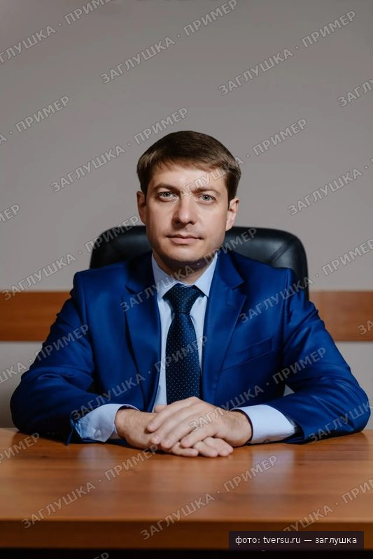
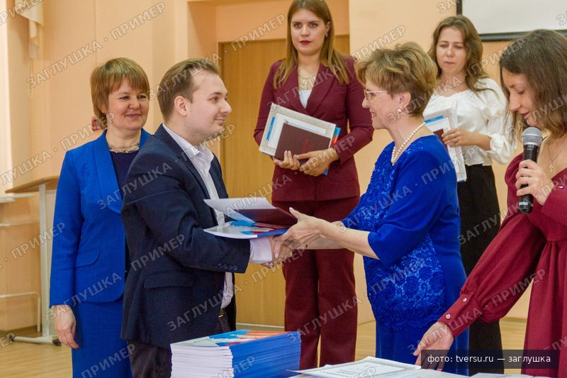
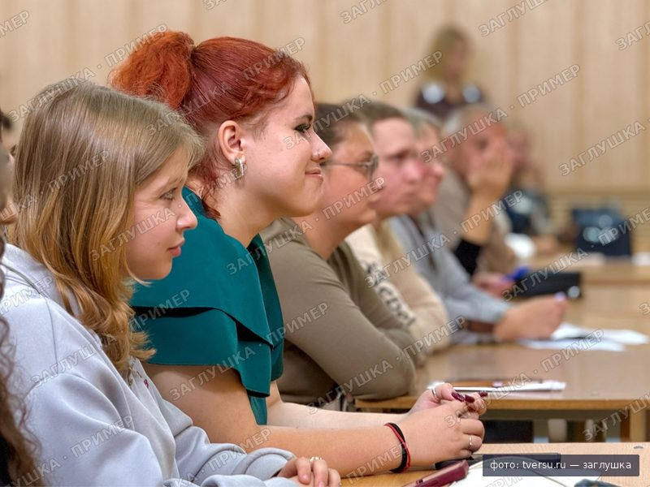

Тверской государственный университет — классическое образование в Твери с 1870 года, которое открывает город, науку и профессию
129 программ бакалавриата, специалитета и магистратуры. 93-е место в России по Round University Ranking 2026.
Приём документов 2026: с [20 июня] по [дата]
Миссия
ТвГУ — классический университет и правопреемник учительской школы Максимовича, открытой в Твери в 1870 году. Сегодня это 15 факультетов и институтов, 129 программ от бакалавриата до аспирантуры и сайт на английском, французском и китайском.
Здесь готовят тех, кто нужен городу и области: учителей, химиков-технологов, программистов, юристов, экономистов и психологов. Наука идёт рядом с учёбой, а город становится площадкой для практики. Среди выпускников и преподавателей университета — Николай Кун, Александр Александров, Андрей Дементьев и Наталья Непряева.
Обращение
Состав руководстваВыбрать университет — значит выбрать город, людей и первую профессию. Мы отвечаем за все три.
- фото: ректор, официальный портрет по пояс, ч/б
[Цитата ректора абитуриентам: одно-два предложения о том, почему стоит выбрать ТвГУ.]
[ФИО ректора]
Ректор Тверского государственного университета

[Цитата ответственного секретаря: как приёмная комиссия помогает с выбором программы и документами.]
[ФИО секретаря]
Ответственный секретарь приёмной комиссии
Программы
Число программ по направлениям появится после сверки с каталогом.
- IT и математика [N] программ бакалавриат, магистратура, аспирантура
- Естественные науки [N] программ бакалавриат, специалитет, магистратура
- Гуманитарные науки [N] программ бакалавриат, магистратура, аспирантура
- Педагогика и психология [N] программ бакалавриат, магистратура
- Экономика и право [N] программ бакалавриат, магистратура, аспирантура
- Физическая культура [N] программ бакалавриат, магистратура
По запросу «» направлений нет
Попробуйте предмет ЕГЭ («химия»), код («38.03.01») или откройте весь каталог.
Партнёры и работодатели
[N] организаций-партнёров[N] договоров о целевом обучении
-

[12 сентября]
Семь первокурсниц ТвГУ стали лауреатами премии Губернатора Тверской области
[Лид: за что вручили премию и на каких факультетах учатся лауреаты.]
-

[9 сентября]
Проект ТвГУ «Свет науки в детский дом» представили на форуме
[Лид: что делают студенты-волонтёры и как присоединиться к проекту.]
-

[1 сентября]
В Академической гимназии ТвГУ прозвенел первый звонок
[Лид: сколько классов набрала гимназия и кто ведёт в них профильные предметы.]
- [N] [октября] День открытых дверейГлавный корпус, ул. Желябова, 33 · для школьников и родителей
- [N] [ноября] Отборочный этап олимпиады ТвГУ для 10–11 классовОнлайн · победители получают [льготу при поступлении]
- [N] [ноября] Открытая лекция «[Тема лекции]»Научная библиотека ТвГУ · вход по регистрации
Направления
Университет — это наука, образование и город
В цифрах
Каждая цифра нарисована в масштабе. [N] — данные, которые университет ещё не опубликовал.
-
1870
год основания: учительская школа Максимовича, 156 лет назад
-
15
факультетов и институтов, одна риска — один
-
129
образовательных программ, одна точка — одна программа
-
93-е
место в России, Round University Ranking 2026; НАР 2026 — топ-200, 2‑я лига
-
[N]
студентов всех форм обучения
-
[N]
бюджетных мест в 2026 году
Приём 2026
Документы принимаем до [дата]
[N] дней до конца приёма документов на бюджет
Через Госуслуги или лично на Желябова, 33
- с [20 июня]Подай заявлениеДо пяти направлений, через Госуслуги или в приёмной комиссии
- до [25 июля]Сдай вступительныеЕГЭ засчитываются автоматически, внутренние испытания по расписанию
- до [3 августа]Дай согласиеОдно согласие на зачисление на выбранную программу
- [9 августа]Проверь приказСписки зачисленных на сайте и в личном кабинете
Вопросы абитуриента
Задать свойКакие ЕГЭ нужны на Прикладную информатику?
[Предмет 1], [предмет 2] и [предмет по выбору]. Минимальные баллы — [N], [N] и [N]; проходной на бюджет в 2025 году — [N]. Точный перечень публикуется в правилах приёма до [дата].
Есть ли общежитие первокурснику?
Да, иногородним студентам очной формы: [N мест] в [N] общежитиях, от [N ₽ в месяц]. Заявление на заселение подаётся вместе с согласием на зачисление.
Сколько стоит обучение?
От [N ₽ в год] в зависимости от программы. Стоимость фиксируется в договоре, есть скидки для [условия] и оплата по семестрам.
Как поступить по целевому?
Заключите договор о целевом обучении с организацией-заказчиком на портале «Работа России» и подайте заявление на целевую квоту. Заказчики, с которыми работает ТвГУ, — [список], всего [N] договоров.
Можно ли подать документы через Госуслуги?
Да. Заявление, согласие на зачисление и отзыв документов доступны через Госуслуги, приезжать в Тверь для этого не нужно.
Контакты
- Адрес
- 170100, Тверь, ул. Желябова, 33
- Телефон
- +7 (4822) 32-15-14
- Приёмная комиссия
- [часы работы]